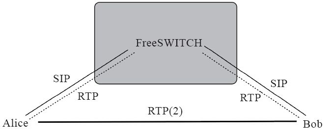
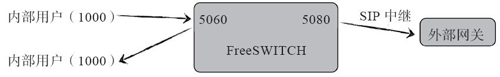

9.2 Sofia配置文件
Sofia的配置文件是conf/autoload_configs/sofia.conf.xml，不过一般不需要直接修改它，因为该文件仅有少数的配置参数，大部分的配置参数实际上是直接在上述配置文件中使用下面的预处理指令装入conf/sip_profiles/目录中的XML文件中的配置：
<X-PRE-PROCESS cmd="include" data="../sip_profiles/*.xml"/>
结合我们在第5章学过的配置文件的知识，Sofia的配置文件的总体结构应该是这样的：
<configuration name="sofia.conf" description="sofia Endpoint">
<global_settings>
<!--
全局参数设置 -->
</global_settings>
<profiles>
<profile name="profile1">
</profile>
<profile name="profile2">
</profile>
</profiles>
</configuration>
其中，global_settings中存放了一些全局配置参数。下面的profiles标签中又包含多个profile标签。每个profile标签的详细信息都是在conf/sip_profiles/下的配置文件中配置的。
Sofia支持多个Profile，而每个Profile相当于一个SIP UA，在启动后它会监听一个“IP地址:端口”对。读到这里细心的读者或许会发现我们前面有一个不准确的地方——我们在讲B2BUA的概念时，实际上只用到了一个Profile，也就是一个UA，但我们还是说FreeSWITCH启动了两个UA（一对背靠背的UA）来为Alice和Bob服务。从物理上来讲，它确实只是一个UA，但由于它同时支持多个Session，在逻辑上就是相当于两个UA，为了不使读者太纠结于这种概念问题，笔者在前面没有进行太多分析。但到了本章，读者应该非常清楚FreeSWITCH中UA的含义了——简单来讲，一个“IP地址:端口”对唯一标志一个UA。
FreeSWITCH默认的配置带了三个Profile（也就是三个UA），在本书中，我们不讨论IPv6，仅讨论internal和external两个（它们分别是在internal.xml和external.xml中定义的）。不要被它们的名字所迷惑，其实internal和external最大的区别就是一个运行在5060端口上，另一个运行在5080端口上。有些读者特别关心internal和external的中文含义（字面意思分别是“内部的”和“外部的”），反而会比较迷惑。当然，两个Profile在默认的配置中还有其他区别，我们下面将会讲到。
9.2.1 Profile配置文件
internel.xml中定义了一个Profile（名字就是internal），它里面有大量的配置参数。这些参数往往与具体的部署方式和呼叫流程有关。到本章为止，我们还没有接触到太多与呼叫流程有关的内容。但是若先讲流程的话，对这里的参数又不熟悉，也不便理解。因此，这就变成了一个是先有鸡还是先有蛋的问题。经过综合考虑，笔者最后决定在本节先把一些重要的配置参数都大体讲一遍，到后面的实战部分在讲到具体流程的时候，涉及这些参数时再深入讨论。
在熟悉了Sofia的配置文件结构以后，我们再来看一下Profile的配置文件。由于Sofia Profile的参数比较多，因此默认把不同的Profile配置存放在单独的文件中。
以internal.xml为例，首先一个Profile的定义是从下面一行开始的：
<profile name="internal">
该行定义了一个Profile，它的名字就叫internal，这个名字本身并没有特殊的意义，也不需要与文件名相同，你可以改成任意你喜欢的名字，但是必须记住它，因为很多地方要使用这个名字。也可以为Profile起个别名 [1] ，如：
<aliases>
<alias name="default"/>
</aliases>
如果有了这个别名，就可以在呼叫字符串中使用这个别名。比如，如果配置文件中有上述配置，就可以使用类似这样的呼叫字符串sofia/default/13912345678@192.168.1.12去呼叫相应的SIP地址。关于呼叫字符串的知识我们还会在第12章讲到。下面我们继续看配置文件。
在一个Profile中，可以配置多个网关（Gateway）。网关是在<gateways></gateways>标签中定义的。默认的配置中只是装入了相关目录下的网关配置文件。配置如下：
<gateways>
<X-PRE-PROCESS cmd="include" data="internal/*.xml"/>
</gateways>
上面的配置代码定义了一些网关。既然Profile是一个UA，它就应该可以注册到别的SIP服务器上去，它要注册的远端SIP服务器对于该Profile来说，就称为网关，而这里的网关配置就是对远端SIP服务器的一些描述，即网关的配置参数由远端的SIP服务器来决定。我们一般不在internal这个Profile上使用Gateway，大多数在external上使用（详见9.3.3节）。
接下来，便定义该Profile所属的域（Domain）。Domain可以是一个IP地址或一个DNS域名。需要注意，直接在操作系统hosts文件中设置的IP到域名的映射可能不好用，如果使用域名，大多数SIP UA都需要有一个真正的DNS服务器。Domain的配置代码如下：
1 <domains>
2 <!--<domain name="$${domain}" parse="true"/>-->
3
<domain name="all" alias="true" parse="false"/>
4 </domains>
在SIP配置文件中，Domain的含义比较容易令人迷惑。因此，一般采用默认的配置就行。不过，总会有些好奇的读者，或者有些高级用户期望了解这些知识，因此我们也简单讲一下。初学者可以自动跳过这一块，以避免“走火入魔” [2] 。
一说到Domain，可能大家都会想到域名。不过在这里，Domain可以是任意的字符串，可以简单把它理解为一个域。FreeSWITCH支持多Domain，也就是逻辑上可以把一些资源（如用户）分到多个“域”中。在本章，我们不讨论多Domain。感兴趣的读者可以参考15.7.1节。
在默认的配置文件中，vars.xml中定义了一个名为domain的全局变量，它的默认值来自于local_ip_v4这个全局变量，也就是说，它是一个IP地址。当然，话又说回来，domain就是一个字符串，它可以是IP地址，也可以是其他值，只是默认的配置中是一个IP地址。该全局变量在很多地方可以引用，如上面配置例子中的第2行（该行默认是注释掉的，因而不生效）。
言归正传。上面配置中第3行的含义是：在该Profile中定义一个Domain，name="all"表示检查看所有的用户目录中定义的Domain（默认是在conf/directory目录下定义的Domain，如果name等于一个特定的Domain，则它仅会检查指定的Domain），然后执行下列动作：
·如果alias="true"，则会为所有的Domain取一个别名，放到与Profile同等重要的位置，以便后续在构造或查询呼叫字符串时能找到正确的用户。如在笔者的FreeSWITCH中使用sofia status命令可以看到如下的行：
Name Type Data State
=================================================================
192.168.1.128 alias internal ALIASED
其中，Type为alias表示是一个别名。
·如果parse="true"（注意默认的配置中此处为false），则FreeSWITCH会解析该Profile中所有的网关。
注意，上面的alias和parse属性都具有排它性，即在有多个Profile的情况下，它们的值只能有一个为true，否则会产生冲突。
好了，关于这个问题我们就讲到这里，读者可以自行比较一下internal和external中这一行的区别。另外，我们也将在15.5.1节深入讲解Domain的实例。
除了上面这些配置外，下面便与该Profile相关的一系列参数，大体的配置结构如下：
<settings>
<param name="
参数名称" value="
参数值">
</settings>
我们在下一节再详细讲几个重要的配置参数。
9.2.1 Profile的几个重要参数
Sofia的Profile有很多可配置参数，它们可以影响某一Profile所代表的SIP UA的行为。也就是说，对于来话而言，所有到达某一Profile（如internal.xml）的呼叫都会进行统一的处理；对于去话而言也类似——所有从某一Profile出去的通话也都有类似的行为（如下面将要讲到的auth-calls参数）。下面我们就来说一下Profile中的一些主要参数，这些参数大部分可以在internal.xml找到相应的例子。
inbound-bypass-media 用于设置入局呼叫是否启用“媒体绕过（Bypass Media）”模式，它的取值有“true”和“false”两种。如：
<param name="inbound-bypass-media" value="true"/>
所有的参数设置格式都差不多，因此，下面我们就不再列出所有代码了。
那么，什么叫Bypass Media呢？
如图9-1所示，Bob和Alice通过FreeSWITCH使用SIP接通了电话，他们谈话的语音（或视频）数据要通过RTP包传送。RTP可以像SIP一样经过FreeSWITCH转发。但是，RTP与SIP相比占用很大的带宽，如果FreeSWITCH不需要“偷听（或录音）”他们谈话，为了节省带宽，完全可以让RTP直接在两者之间点对点传送，这种情况对FreeSWITCH来讲就是没有媒体的，在FreeSWITCH中就称为Bypass Media（媒体绕过）。

图9-1 Bypass Media
所以，如果将inbound-bypass-media的值设为“true”，那么对于任何来话（如Alice打给Bob，电话要先进入FreeSWITCH，对FreeSWITCH来说该电话就称为来话）都会自动采用Bypass Media模式。
下面我们还会看到更多与Bypass Media相关的参数。
·media-option：媒体选项，它有两个可能的取值——resume-media-on-hold和bypass-media-after-att-xfer。前者的意思是，如果FreeSWITCH是没有媒体（No Media/Bypass Media）的，那么若设置了该参数，当你在话机上按下Hold键时，FreeSWITCH将会回到有媒体的状态；后者是跟Attended Transfer有关的，Attended Transfe即出席转移，又称协商转移，它需要媒体配合才能完成工作。但如果在执行转接之前没有媒体（处于Bypass Media状态），则该参数能让转接执行时通过re-INVITE请求要回媒体，等到转接结束后再回到Bypass Media的状态。我们将在15.1.1节详细讲解Attended Transfer。
·context：设置来话将进入Dialplan中的哪个Context进行路由。
<param name="context" value="public"/>
需要指出的是，如果用户注册到该Profile上（或是经过认证的用户，即本地用户），则用户目录（directory）中设置的user_contex优先级要比这里设置的高（见10.5节）。
·dialplan：设置默认的dialplan类型，即在该Profile上有电话呼入后到哪个Dialplan中进行路由。
<param name="dialplan" value="XML"/>
·inbound-codec-prefs：设置支持的来话媒体编码，用于编码协商。默认值引用了vars.xml中的一个global_codec_prefs变量，该变量的默认值是“G722,PCMU,PCMA,GSM”。
<param name="inbound-codec-prefs" value="$${global_codec_prefs}"/>
·outbound-codec-prefs：设置去话语音编码。
<param name="outbound-codec-prefs" value="$${global_codec_prefs}"/>
·rtp-ip：设置RTP的IP地址。
<param name="rtp-ip" value="$${local_ip_v4}"/>
·sip-ip：设置SIP的IP地址。
<param name="sip-ip" value="$${local_ip_v4}"/>
·sip-port：该Profile启动后监听的SIP端口号。默认的配置中引用了var.xml中定义的一个变量internal_sip_port，默认是5060。
<param name="sip-port" value="$${internal_sip_port}"/>
·auth-calls：设置是否对来电进行鉴权。默认是需要鉴权，即所有从该Profile进来的INVITE请求都需要经过Digest验证。
<param name="auth-calls" value="$${internal_auth_calls}"/>
·ext-rtp-ip和ext-sip-ip：用于设置NAT环境中公网的RTP IP和SIP IP。该设置会影响SDP中的IP地址。
<param name="ext-rtp-ip" value="auto-nat"/>
<param name="ext-sip-ip" value="auto-nat"/>
其中，value的取值有以下几种可能：
 一个IP地址，如12.34.56.78；
一个IP地址，如12.34.56.78；
 一个STUN服务器，它会使用STUN协议获得公网IP，如stun:stun.server.com；
一个STUN服务器，它会使用STUN协议获得公网IP，如stun:stun.server.com；
一个DNS名称，如host:host.server.com；
 auto，它会自动检测IP地址；
auto，它会自动检测IP地址；
 auto-nat，如果路由器支持NAT-PMP或uPnP，则可以使用这些协议获取公网IP。
auto-nat，如果路由器支持NAT-PMP或uPnP，则可以使用这些协议获取公网IP。
这些设置的值可以使用sofia status命令显示，如在笔者的电脑上显示结果如下：
freeswitch> sofia status profile internal
=====================================================================
Name internal
RTP-IP 192.168.1.128
Ext-RTP-IP 119.40.26.181
SIP-IP 192.168.1.128
Ext-SIP-IP 119.40.26.181
我们将在9.4节专门介绍NAT。
本节我们讨论了SIP Profile中的几个重要参数，其他的参数在这里就不多解释了。
9.2.2 external.xml
external.xml是另一个UA配置文件，它定义了另一个名为“external”的UA，默认使用5080端口。从external.xml中可以看到，其中的大部分参数都与internal.xml中相同。最大的不同是auth-calls参数。在internal.xml中，auth-calls默认值是true；而在external.xml中，默认值是false。也就是说，客户端发往FreeSWITCH的5060端口的SIP消息需要鉴权（一般只对REGISTER和INVITE消息进行鉴权），而发往5080的消息则不需要鉴权。我们一般把本地用户都注册到5060上，所以它们打电话时要经过鉴权，保证只有授权（在我们用户目录中配置的）用户才能注册和拨打电话。而5080不同，任何人均可以向该端口发送SIP INVITE请求。
如图9-2所示，本地用户1000注册到5060端口上，每次它向外打电话时（呼叫本地用户1001时也一样），它向FreeSWITCH的5060端口发送INVITE请求，FreeSWITCH对其鉴权，验证通过后（可以是IP地址验证或Digest验证），才允许通话继续进行─如果呼叫1001，则FreeSWITCH继续向用户1001发送INVITE请求；如果呼叫外部电话，则通过端口5080向外部网关发送INVITE请求。

图9-2 FreeSWITCH的端口连接
在上面的例子中，FreeSWITCH也可以通过5060端口向外部网关发送INVITE请求，效果是一样的。也就是说对于去话（Outbount Call，出局通话）而言，两者在这里没有区别。但对于来话（Inbound Call，入局通话）就不同了。为了让FreeSWITCH能接收来话，一般有两种方式：
·FreeSWITCH作为一个UAC（这里可以理解为软电话，如X-Lite）从本地的5080端口通过SIP注册到外部网关上，这样外部网关就可以通过SIP消息中的Contact字段知道该UAC所在的IP地址和监听的端口（这里是5080）。当有电话进来时，外部网关就向FreeSWITCH所在IP的5080端口发送INVITE请求。
·某些网关是把来话和去话分开的，一般不需要或者根本不允许注册。那它们怎么知道我们的FreeSWITCH的IP和端口呢？在这种情况下，它们一般是在申请的时候事先配置好的，就比方你去装电话时，告诉电信公司你家的门牌号一样，所不同的是这里你告诉人家的是你FreeSWITCH服务器的IP地址和端口号（在这里是5080）。如果有来话，外部网关就按照事先配置好的地址发送INVITE请求。
不管是使用以上哪种方式，当外部网关的INVITE请求到达FreeSWITCH时，我们不能要求对这些消息进行鉴权，因为外部网关不是FreeSWITCH的本地用户，它们不知道该如何给FreeSWITCH提供鉴权信息。所以我们在external这个Profile中把auth-calls参数设为false，对来话不鉴权。
读到这里，读者大概就明白多了。如果你使用5060端口向外部网关进行注册的话，那么外部网关的来话请求将被发送到FreeSWITCH的5060端口上，由于FreeSWITCH会对发送到该端口的所有来话进行鉴权，很显然外部的网关不知道怎么才能通过FreeSWITCH的验证，所以最终FreeSWITCH会拒绝所有来话。当然可能你还是有疑问，既然5080端口允许所有来话，那么怎么保证安全呢？这个我们将在后面讲安全的时候介绍，在此就不多说了。
9.2.3 Gateway
上一节我们已经提到，FreeSWITCH需要通过外部网关向外打电话，而这个外部网关就称为Gateway。在external.xml中，我们可以看到它使用预处理指令将external目录下的所有的XML配置文件都装入到了该Profile的gateways标签中：
<gateways>
<X-PRE-PROCESS cmd="include" data="external/*.xml"/>
</gateways>
这样做的好处是，我们可以把每个网关配置写到不同的文件中。默认的配置中包含了一个example.xml，里面有很多配置选项。这里我们先从最简单的配置讲起。
如3.5节所述，添加一个新网关只需要在external目录中新建一个XML文件，名字可以随便起，但需要以.xml结尾，如“gw1.xml”。其内容如下：
<gateway name="gw1">
<param name="realm" value="SIP
服务器地址"/>
<param name="username" value="SIP
用户名"/>
<param name="password" value="
密码"/>
</gateway>
其中，每个网关都有一个名字，由第一行的name属性指定。该名字可以与XML文件的名字相同，也可以不同。在FreeSWITCH内部，将以该名字唯一确定该网关。在整个FreeSWITCH中，网关名字必须唯一，否则除第一个外，其他的都将被忽略。
realm指定SIP网关服务器的地址，可以是一个合法的域名或IP地址，如果端口号不是5060，则后面需要加上“:端口号”，如“1.2.3.4:5080”。该参数是可选的，如果没有，则默认跟网关的名字（name）相同（此时网关的名字应该写成一个IP地址或者是域名，如192.168.7.7）。
username和password分别指用户名和密码，这两个参数也是必需的。值得注意的是，有些网关使用IP地址验证，而不需要用户名和密码。在FreeSWITCH中，你也必须设置这两个参数，但它们的值将被忽略，所以可以填上任意值 [3] 。
我们来看一下example.xml都有哪些默认的参数。注意，默认情况下这些参数都是注释掉的，不起作用。
<include>
<!--<gateway name="asterlink.com">-->
<!--<param name="username" value="cluecon"/>-->
<!--<param name="password" value="2007"/>-->
<!--<param name="realm" value="asterlink.com"/>-->
其中，<include>以及后面的</include>标签指明该文件被其他文件包含，它将在预处理阶段被去掉。而且即使没有这两个标签也不会出错。但为了严谨性，建议不要省略这对标签。
下面的代码用于设置SIP消息中From字段的值，如果省略，则默认与username相同。
<!--<param name="from-user" value="cluecon"/>-->
下面的代码用于设置From字段中的domain值，默认与realm相同。
<!--<param name="from-domain" value="asterlink.com"/>-->
下面的代码用于设置来话中的分机号，即被叫号码，默认与username相同。
<!--<param name="extension" value="cluecon"/>-->
如果需要代理服务器，则设置该proxy的值，默认与realm相同。
<!--<param name="proxy" value="asterlink.com"/>-->
如果需要注册到代理服务器，则设置该register-proxy的值，默认与realm同。
<!--<param name="register-proxy" val
”e="mysbc.com"/>-->
下面的代码用于设置注册时SIP消息中Expires字段的值，默认为3600秒。
<!--<param name="expire-seconds" value="60"/>-->
如果网关不需要注册，则设为false，默认为true。有些网关必须注册了才能打电话；而有的则不需要。另外，注册到网关上还允许从网关设备呼入我们的FreeSWITCH。
<!--<param name="register" value="false"/>-->
下面的代码用于设置SIP消息使用udp还是tcp来承载。
<!--<param name="register-transport" value="udp"/>-->
下面的代码用于设置如果注册失败或超时，则多少秒后再重新注册。
<!--<param name="retry-seconds" value="30"/>-->
将主叫号码（要发给对方的）放到SIP的From字段中。默认会放到Remote-Party-ID字段中（有些终端从From字段中获取主叫号码）。
<!--<param name="caller-id-in-from" value="false"/>-->
下面的代码用于设置在SIP协议中Contact字段中额外的参数。具体的参数需根据实际情况而定，请参考相关的SIP协议或对端设备的要求。
<!--<param name="contact-params" value="tport=tcp"/>-->
每隔一段时间发送一个SIP OPTIOINS消息，如果失败，则会从该网关注销，并将其设置为down状态。通过周期性地发送无关紧要的SIP消息，有助于快速发现对方的状态变化，同时也在NAT环境中有助于保持路由器上的NAT映射关系，保持连接畅通。
<!--<param name="ping" value="25"/>-->
最后是网关及include的关闭标签，保持XML的完整性。
<!--</gateway>-->
</include>
到此，示例网关配置文件中的参考就都介绍完了。这些参数在与其他设备对接时比较有用。FreeSWITCH的兼容性很强，通过调整Profile及Gateway的参数，可以兼容已知的绝大部分SIP设备。
[1] 注意，在默认的配置文件中，别名一行是加了注释的，也就是说默认情况下这个别名不起作用，写在那里只是一个例子。此处为了叙述方便，去掉了注释。
[2] 笔者知道这个词可能不严谨，但实在找不到更恰当的比喻了。
[3] 这里的username将会被填到SIP的From及其他头域里，所以还是可能会有影响的。